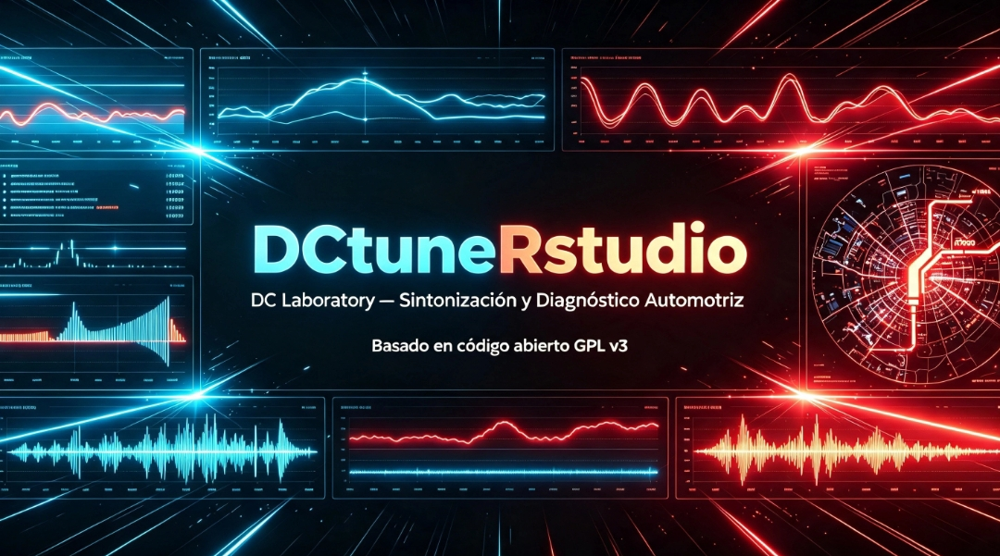
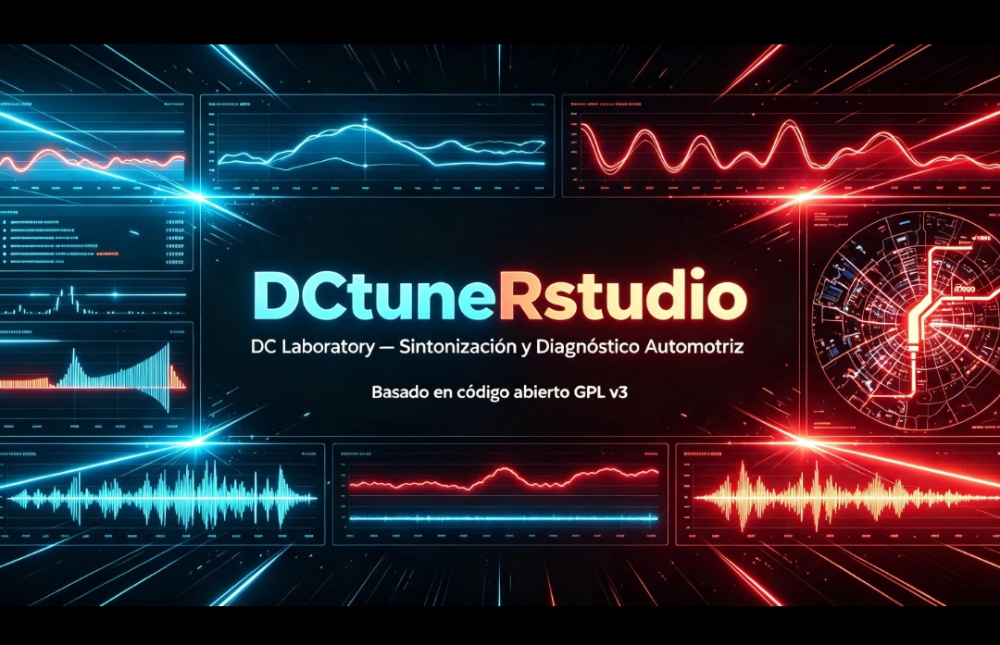
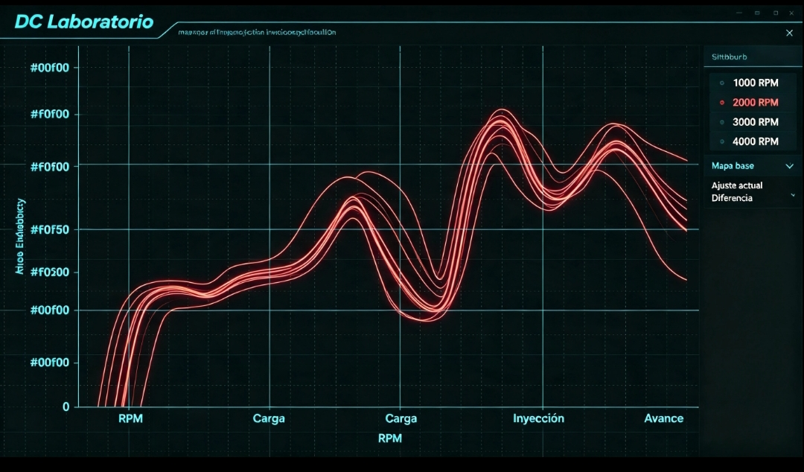
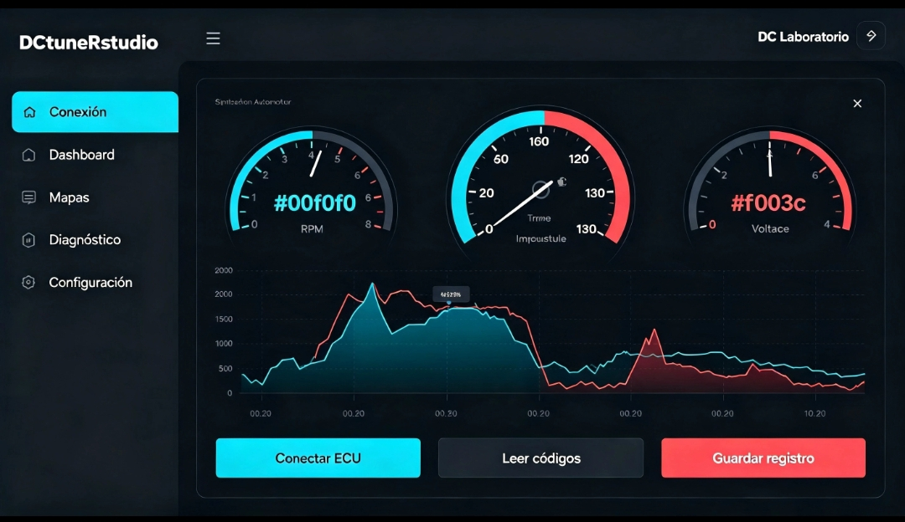
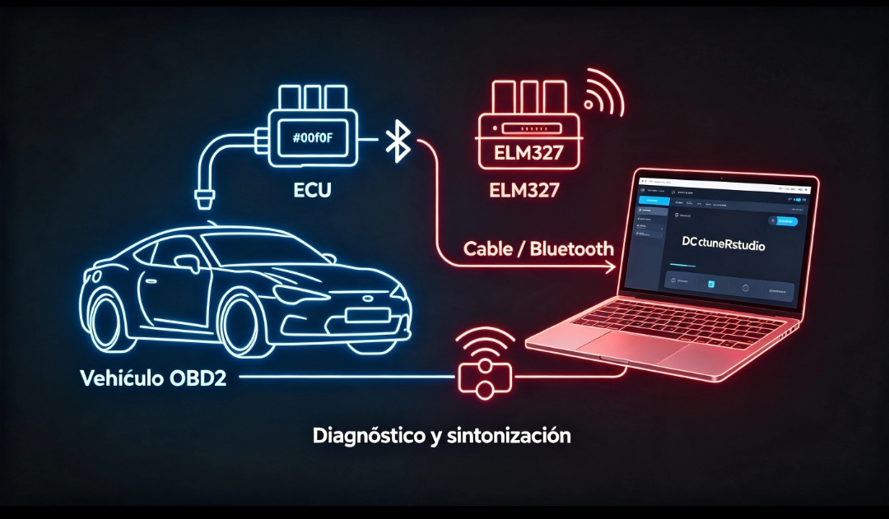

Panel principal

Diagnóstico y Sintonización Automotriz
Diagnóstico, conexión y ajuste de ECU desde cualquier dispositivo compatible con navegador.
Abrir panel




Esta versión no requiere instalación. La comunicación ECU depende del backend o consola configurada para el dispositivo.